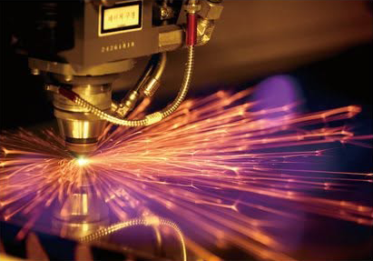
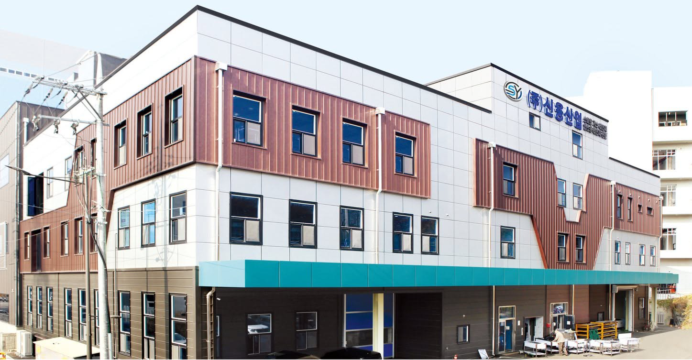
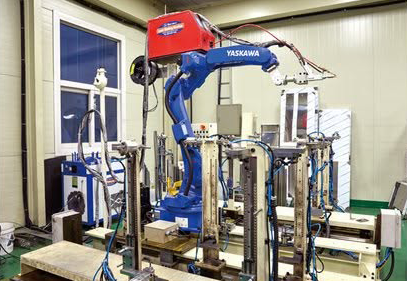
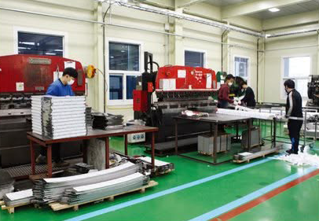
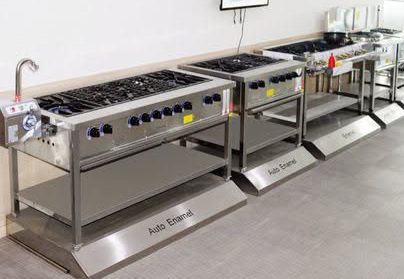

01
Precision Manufacturing
Specialized fabrication equipment supports precise processing of stainless steel components.
ABOUT ONNURI
Onnuri Outlet Kitchen Corporation supplies brand-new and used commercial kitchen equipment for restaurants, cafés, commissaries, and other food businesses.

WHO WE ARE
Onnuri Kitchen serves customers looking for commercial kitchen equipment for new businesses, existing restaurants, kitchen upgrades, and other food service operations.
From gas ranges and refrigeration equipment to stainless work tables, sinks, kitchenware, and other equipment, customers can explore available options based on their operational requirements and budget.
Our warehouse is located in San Fernando, Pampanga, where customers can visit and view available equipment.
OUR MISSION
Our mission is to provide practical and accessible commercial kitchen equipment solutions that help restaurants, cafés, commissaries, and other food businesses build and improve their operations.
We aim to assist customers in finding equipment that suits their requirements while providing responsive support throughout the purchasing process.
OUR VISION
Our vision is to become a trusted commercial kitchen equipment partner for food businesses in the Philippines, recognized for practical solutions, dependable service, and a growing selection of equipment.
We envision helping more entrepreneurs and established businesses create efficient commercial kitchens that support their long-term growth.
WHY ONNURI
Customers can explore different equipment options depending on availability, requirements, and budget.
We accommodate individual equipment requirements as well as wholesale and bulk-order inquiries.
Visit our warehouse in San Fernando, Pampanga to view available commercial kitchen equipment.
Our team assists with product inquiries, equipment requirements, availability, and quotation requests.
OUR KOREAN MANUFACTURING PARTNER
Shin Young Industry Co., Ltd. is a Korean manufacturer specializing in commercial gas ranges, with over 30 years of industry experience and expertise.
Its manufacturing operations combine specialized production equipment, commercial cooking technology, and quality-focused production processes for professional kitchen environments.

MANUFACTURING & QUALITY
Modern production equipment and manufacturing processes support the fabrication of commercial kitchen equipment.

Specialized fabrication equipment supports precise processing of stainless steel components.

Automated manufacturing systems help support consistent and efficient production processes.

Dedicated production facilities support commercial kitchen equipment manufacturing and assembly.
GAS RANGE TECHNOLOGY
Different product series provide practical cooking solutions for a range of professional kitchen requirements.
STANDARD ECONOMY
Commercial gas ranges designed around durable construction, practical operation, and flexible burner configurations.
KITCHEN BLUE
Auto-ignition commercial ranges featuring ceramic-coated shield burners and independent burner control.
SMART RANGE
Advanced pre-mixed gas combustion technology designed to provide stable heat and efficient commercial cooking.
CUSTOMIZATION & GLOBAL CAPABILITY
Shin Young Industry supports commercial kitchen requirements through manufacturing capability, product customization, and equipment solutions developed for different operating environments.
Product dimensions, configurations, and specifications can be adapted to support different kitchen layouts and operating needs.
Manufacturing and production capabilities support commercial kitchen equipment requirements for customers in different markets.
“Without trust, a company cannot stand.”
A manufacturing philosophy centered on trust, continuous development, and long-term business relationships.

COMMERCIAL COOKING EQUIPMENT
The product range includes commercial cooking equipment developed for restaurants, commissaries, food businesses, and other professional kitchen environments.
EXPLORE GAS RANGES →QUALITY & INNOVATION
Shin Young Industry's manufacturing background includes quality-management certification, patented technologies, and registered product designs related to commercial cooking equipment.
WORK WITH ONNURI
Explore our commercial kitchen equipment or send us your equipment requirements for quotation assistance.